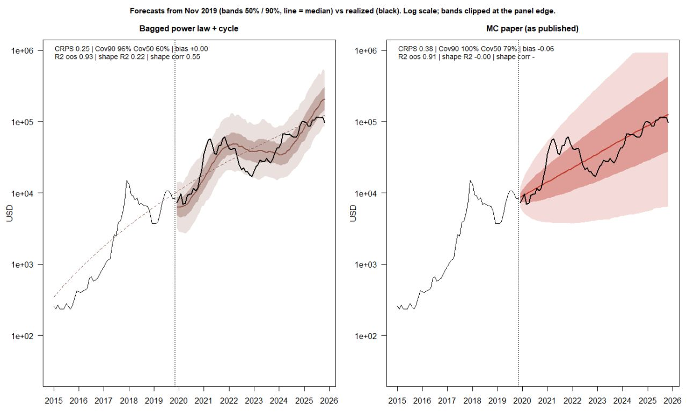

← Projects · 2026
Bitcoin Mining as a Real Option
Time-series forecasting and decision analysis for a renewable-energy investment
A wind farm in Brazil can sell its early energy on the spot market or burn it mining Bitcoin. I replicated the real-options valuation of Bastian-Pinto et al. (2021), replaced its geometric Brownian motion with a bagged power-law + halving-cycle forecast, and then checked every recommendation against what actually happened from 2019 to 2025.
- 0.25CRPS, bagged model
- 0.38CRPS, paper's MC
- p = 0.004Diebold–Mariano, rolling
- 5.72USD M, replicated (paper 5.74)
The problem
A wind farm has won a regulated power contract that starts in six years. The firm can wait, or build now and use the plant early. Building takes two years; in the four years that follow, the energy is not yet committed, so it can be sold on the spot market or used on site to mine Bitcoin — if the firm has bought mining machines. Miners take three months to install and are obsolete after two years, so there are two purchase dates: September 2021 and September 2023.
With miners installed, the operator picks the better use of the energy every month. Each purchase is therefore a bundle of 24 monthly options to swap electricity revenue for mining revenue, bought at the price of the machines. Mining revenue per kWh depends on the Bitcoin price S_t, the network difficulty D_t and the block reward R_t, which the protocol halves roughly every four years:
H and W are the miner's hash rate and power, P_t the spot electricity price (a mean-reverting process, as in the paper), \rho = 0.85 the share of energy reaching the miners, K the miner price paid at month s_j \in \{22, 46\}. The four strategies follow by addition: V_{S_1} = V_{S_0} + G_1, V_{S_2} = V_{S_0} + G_1 + G_2, V_{S_3} = V_{S_0} + G_2.
Three models, three recommendations
All three models share the paper's cash-flow model and decisions; they differ only in how the uncertainty of mining revenue is described. Model A is the paper's GBM as published. Model B adds the block-reward halving, which the paper omits. Model C replaces the GBM with the bagged forecast below. Each is valued on 50,000 simulated paths; the last two columns run the same model on the single path that actually occurred.
![Decision tree with three decision nodes (build now in Nov 2019, buy miners in Sep 2021, buy miners in Sep 2023) leading to four strategies. Expected NPV in USD million (probability of a loss): S2 mine in years 3–6: Model A 5.72 (15%), Model B −0.64 (65%), Model C 1.72 (45%), actual 4.56 same miner and 10.61 newest miner. S1 mine in years 3–4: 3.59 (24%), 0.64 (50%), −0.02 (59%), actual 4.78 and 7.59. S3 mine in years 5–6: 3.63 (21%), 0.22 (55%), 3.23 (28%), actual 0.27 and 3.51. S0 sell power only: 1.50 (38%) under all models, actual 0.49. Waiting has NPV 0.](../assets/img/btc/decision-tree.png)
Model A · GBM, as published
Buy at both dates (S2): 5.72 M, 15% chance of a loss — the paper's answer.
Model B · GBM with halving
Never buy (S0): 1.50 M. The halving alone reverses the paper's case for mining.
Model C · bagged, with halving
Skip 2021, buy in 2023 (S3): 3.23 M — a strategy the paper did not consider.
Forecasting Bitcoin: bagged power law + halving cycle
A GBM path never returns to a trend, and its median is a straight line on the log scale. The model I used instead treats the log series as trend-stationary: it reverts, at a fitted speed, to a power law in the age of the network, with a deterministic swing that follows the four-year halving cycle. Bagging then re-estimates the whole model on block-bootstrapped copies of the history and pools the simulated paths.

The model
For a log series y_t (the Bitcoin price for the forecasting tests, \ln X_t inside the valuation), with A_t the age of the network in days:
The power law gives a growth rate b/A_t that slows as the network ages. \phi sets how fast deviations from the trend fade — a discretized Ornstein–Uhlenbeck process with half-life \ln 0.5/\ln\phi — and \theta_t is the position of month t between two halvings \tau_i, projected from the protocol's 210,000-block schedule so no future dates leak in. All coefficients are estimated by least squares; future shocks are drawn from the fitted residuals.
Bagging
The remainder of an STL decomposition is resampled in 24-month blocks to build B = 30 replicates; the model is refitted on each and K paths are simulated per member. The pooled distribution mixes innovation uncertainty (within members) with estimation uncertainty (across members). Inside the valuation, revenue after a purchase at month s follows B_t = b_0\,(X_t/X_s)\,(R_t/12.5).
How it was evaluated
- Scored with the CRPS on the log scale, which rewards calibration and sharpness together, plus interval coverage and an out-of-sample R² of the median path, including a detrended "shape" R² that a straight-line forecast cannot game.
- A no-hindsight set-up (train to Nov 2016, forecast to Nov 2019) for choosing settings, and a rolling test over 17 forecast origins (2016–2024, 24 months ahead) with Diebold–Mariano tests using a Newey–West variance.
- An ablation that adds one ingredient at a time to the paper's GBM: power-law drift, cycle drift, mean reversion, bagging. Mean reversion is the largest single gain (rolling CRPS 0.40 → 0.31); bagging adds a further significant gain (0.31 → 0.25, p = 0.001) and fixes calibration (90% coverage 79% → 95%).
- A grid of 266 configurations across five bagged learners (ETS, ARIMA, cycle regression, XGBoost, power law + cycle), explored in an interactive Shiny lab. Every power-law configuration beat the paper's Monte Carlo on both test periods; no other learner did.
What actually happened
The 72 months of the analysis are now in the past, so each recommendation can be checked on the realized prices. Mining beat selling power in all 24 months of 2021–2023 and in 21 of 24 months of 2023–2025. The first purchase was the profitable one: it gained USD 4.28 M with the paper's miner and 7.10 M with the newest — above the 95th percentile of Models B and C.
The paper's recommendation did best, for the wrong reasons. All three models assume that mining revenue restarts at its November 2019 level at each purchase. By September 2021 the price-to-difficulty ratio was 3.9 times that level. Model A's two errors partly cancel — ignoring the halving overstates revenue by 2×, the stale starting level understates it by 3.9× — while Models B and C fix the first error and keep the second.
After a purchase, the bagged model described revenue best. Over 2023–2025 actual revenue fell to 51% of its starting value; the bagged median was 28% against 12% for the GBM with halving, and its starting level at the second purchase (0.074 USD/kWh) was closest to the actual 0.082.
Takeaways
- A better forecaster does not guarantee a better decision: the assumption about the starting level of revenue, shared by all three models, mattered more than the stochastic process.
- Omitted structure (the halving) can reverse a published recommendation on its own.
- The bagged model's recommendation is sensitive to its settings, which were tuned on price forecasts rather than on the ratio that drives revenue — reported as a limitation, not hidden.
Replication
- Line-by-line port of the authors' Monte Carlo, verified against their original notebook with a common seed: all 50,000 × 3 NPV paths agree to 0.00 USD.
- The published Table 5 (1.51 / 3.60 / 5.74 M) is reproduced as 1.50 / 3.59 / 5.72 M. Because the authors set no seed, I reran the model under 100 seeds (5 million paths) to show the published values sit inside the seed-to-seed distribution.
- Documented nine discrepancies between the paper's text and the code that produced its results (among them the anticipation cost and the mining capacity) and reran the model with the text values under common random numbers to measure their effect. Also flagged a σ²/2 drift correction that is applied twice.
- Re-estimated the stochastic processes (ADF and variance-ratio tests, GBM and mean-reverting calibration) from the authors' data, and rebuilt the realized path from public Bitcoin, difficulty, CCEE spot-price and exchange-rate series.